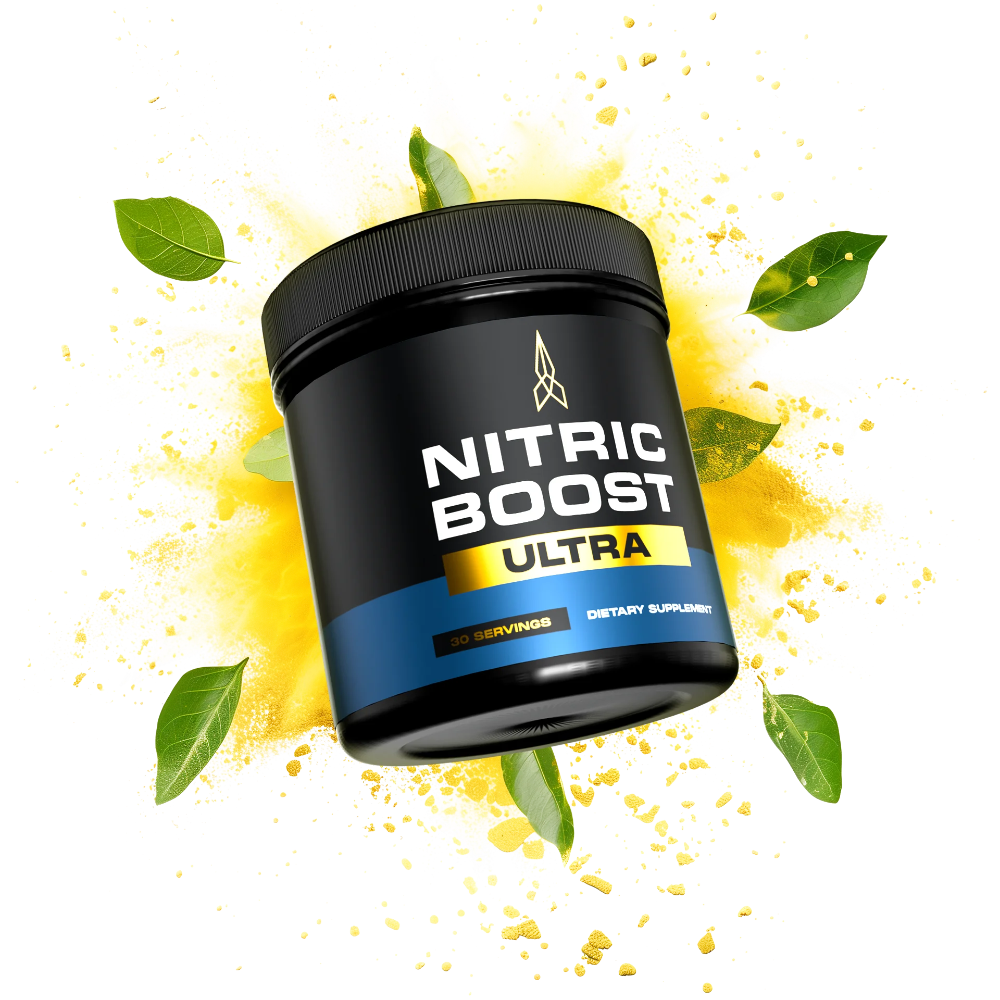
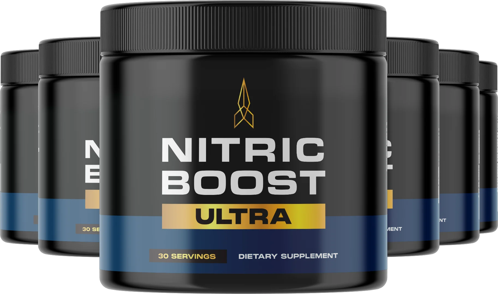

NO
Precursors
L-arginine and L-citrulline are amino acids involved in the body’s nitric oxide pathway.
We examined the ingredient profile, purchase terms, practical advantages, and important limitations—so you can decide whether it deserves a place in your routine.
Opens the manufacturer’s website · No purchase required

Nitric Boost Ultra combines amino acids, beet root, plant extracts, and niacin in a once-daily powder. The formula is positioned to support nitric oxide production, circulation, energy, and male vitality—not to diagnose or treat a medical condition.
The ingredients are grouped around a simple nutritional approach. Individual responses vary, and a supplement cannot replace medical evaluation or prescribed care.
L-arginine and L-citrulline are amino acids involved in the body’s nitric oxide pathway.
Beet root, ginkgo, dong quai, and epimedium round out the botanical side of the formula.
Niacin and D-aspartic acid are included as part of the broader energy and performance blend.
Based on the formula currently presented by the manufacturer. Always confirm the Supplement Facts label on the product you receive, since formulations can change.
An amino acid compound commonly used in nitric oxide and exercise-support formulas.
A direct nutritional precursor used by the body in nitric oxide production.
A natural source of dietary nitrates and a familiar circulation-support ingredient.
A botanical traditionally used in formulas focused on circulation and antioxidant support.
Also known as epimedium, a plant traditionally associated with vitality formulas.
A traditional botanical included as part of the product’s broader plant blend.
An amino acid involved in normal biological signaling and common in men’s wellness products.
An essential vitamin that contributes to normal energy-yielding metabolism.
Nitric Boost Ultra may appeal to adults seeking a stimulant-free, powdered supplement built around nitric oxide precursors and plant ingredients. Its current 60-day refund window reduces purchase risk.
It is still a dietary supplement. It should not be presented as a cure, and anyone with ongoing sexual, circulatory, blood-pressure, or cardiac concerns should talk with a healthcare professional rather than self-treat.

Pricing and availability can change. Verify all details on the manufacturer’s site before ordering.
Visit Official Site → Affiliate link · 60-day guarantee currently advertised*The manufacturer currently directs customers to its online offer page. Buying through the official sales flow lets you review the latest package choices, shipping terms, and refund policy before placing an order.
Check the current labelFormula details can change. Review the product information shown at checkout.
Compare package optionsChoose based on your budget—not only the lowest advertised per-jar price.
Save your order detailsKeep your confirmation email and review the seller’s refund instructions.
It is a powdered dietary supplement marketed to adult men, formulated with amino acids, beet root, botanicals, and niacin to support nitric oxide production, circulation, energy, and vitality.
The current product directions describe one scoop mixed with approximately eight ounces of water or another beverage. Follow the label on the container you receive.
No. No dietary supplement can guarantee a specific outcome, and individual responses vary. The purchase guarantee concerns eligibility for a refund—not a guarantee of health results.
Anyone taking prescription or over-the-counter medication, managing a health condition, preparing for surgery, or concerned about persistent symptoms should consult a qualified healthcare professional before use.
The manufacturer currently sells it through its own website. This review links to that site; we do not process orders, payments, shipping, or refunds.
The manufacturer currently advertises a 60-day money-back guarantee. Terms, eligibility, and refund handling are controlled by the seller, so review the current policy on the official site before purchasing.
Review the seller’s latest packages and terms before ordering.